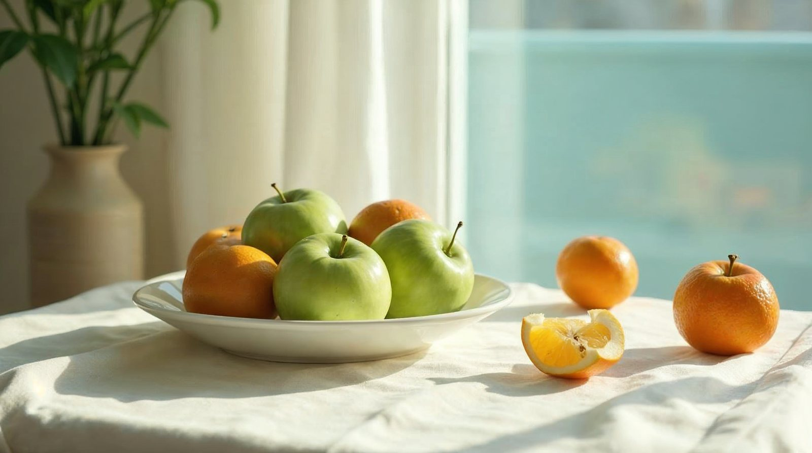
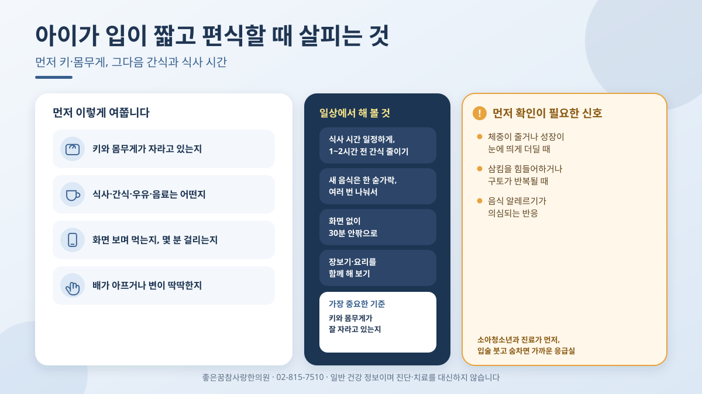

이종호 한의사 감수좋은꿈참사랑한의원 대표원장 (한의사 면허번호 19769)발행 2026-11-26 · 수정 2026-11-26
이 글의 차례
저녁 일곱 시, 반찬 세 가지를 겨우 차려 놓았는데 아이는 밥알 몇 개를 굴리다 숟가락을 내려놓습니다. 아이가 입이 짧고 편식이 심할 때, 저는 한 끼에 얼마나 먹었는지보다 몇 주 동안 키와 몸무게가 제 선을 따라 자라고 있는지를 먼저 보시라고 말씀드립니다.
그다음은 하루의 리듬입니다. 식사 전 간식과 우유, 주스를 언제 얼마나 먹는지, 밖에서 얼마나 움직이는지, 몇 시에 자고 대변은 편한지를 함께 보면 바꿀 곳이 보입니다. 한 숟가락 더 먹이기보다 배고픈 시간이 제때 오도록 리듬을 고르는 쪽이 먼저입니다.
다만 몸무게가 줄거나 몇 달째 늘지 않으면 소아청소년과에서 성장 곡선부터 확인해 주세요. 구토나 설사가 되풀이되거나, 소변이 크게 줄고 아이가 축 처진다면 한의원 진료를 기다리지 말고 소아청소년과나 가까운 응급실로 가셔야 합니다.
한 숟가락만 더, 하며 그릇을 들고 거실을 따라다니다 보면 밥상이 매일 작은 싸움터가 됩니다. 정성껏 만든 반찬이 그대로 남을 때의 서운함, 또래보다 작아 보이는 아이를 볼 때의 조바심. 진료실에서 이런 마음을 털어놓으시는 보호자분이 정말 많습니다.
어르신들은 아이가 말랐다고 걱정하시고, 어린이집 알림장에는 오늘도 반쯤 먹었다는 말이 적혀 옵니다. 그런 말이 쌓이면 내가 뭘 잘못 먹였나 스스로를 탓하게 되지요. 입이 짧은 아이는 생각보다 흔하고, 보호자 한 사람의 잘못으로 생기는 일은 드뭅니다.
왜 아이는 밥 앞에서 입을 다물까요
가장 흔한 이유는 밥때에 배가 고프지 않은 것입니다. 하원 길에 받은 과자, 놀다가 마신 우유와 주스, 식탁에 앉기 전 집어 먹은 과일 몇 조각. 하나하나는 작아도 아이 배에는 꽤 큰 양입니다.
수시로 조금씩 먹다 보면 배가 비는 시간이 없어 배고프다는 느낌 자체를 덜 겪게 됩니다. 우유를 물처럼 마시는 아이는 밥 양이 줄 뿐 아니라 철분이 모자라기 쉽다는 이야기도 있어, 얼굴이 창백하고 쉽게 지친다면 소아청소년과에서 확인해 보세요.
자라는 속도도 영향을 줍니다. 돌이 지나면 첫해만큼 빠르게 자라지 않아 아기 때보다 먹는 양이 줄어 보이는 시기가 있습니다. 끼니마다 먹는 양이 들쭉날쭉해도 며칠을 놓고 보면 비슷하게 맞춰 가는 아이가 많습니다. 한 끼만 보면 걱정이 커지는 이유이기도 하지요.
낯선 음식을 경계하는 것도 자라는 과정에서 흔한 모습입니다. 두세 살에서 예닐곱 살 무렵에는 처음 보는 음식, 여러 재료가 섞인 음식, 물컹하거나 미끈한 식감을 피하는 아이가 많습니다. 같은 음식을 열 번 넘게 마주쳐야 겨우 한 입 먹어 보는 아이도 있다고 합니다.
몸의 사정도 있습니다. 변비로 배가 늘 더부룩한 아이, 배가 자주 아프다는 아이, 감기나 장염을 앓은 뒤 기운이 덜 돌아온 아이는 먹는 양이 줄기 쉽습니다. 밖에서 덜 움직인 날이나 늦게 잔 다음 날 아침에 입맛이 없는 것도 흔한 일입니다.
식탁의 분위기도 빼놓을 수 없습니다. 재촉과 꾸중, 누구는 잘 먹는데 하는 비교가 되풀이되면 식탁 자체가 피하고 싶은 자리가 됩니다. 영상을 보며 먹으면 배부른 느낌을 알아차리기 어려워, 밥을 입에 문 채 시간만 길어지기도 하고요.
왜 먹은 양보다 자라는 선을 먼저 볼까요
보호자의 눈은 자연스럽게 그릇에 남은 밥으로 갑니다. 그런데 아이가 충분히 먹고 있는지를 잘 알려 주는 것은 그릇보다 키와 몸무게가 자라는 선입니다. 소아청소년과 영유아 검진에서 쓰는 성장 곡선이 그 선을 보여 줍니다.
성장 곡선에서는 지금 몇 번째 자리에 있는지보다, 그동안 그려 온 선을 비슷하게 따라가는지가 더 큰 의미가 있습니다. 또래보다 작고 가벼워도 제 선을 따라 꾸준히 자라는 아이가 있고, 선 아래로 처지기 시작하면 원인을 살펴봐야 합니다.
집에서 잴 때는 같은 시각에 같은 방법으로 재어 주세요. 아침에 맨발로 벽에 등을 대고 키를 재고, 석 달에 한 번쯤 날짜와 함께 적어 두면 됩니다. 영유아 검진과 학교 건강검사 결과를 한곳에 모아 두면 어느 진료실에서든 상담이 구체적이 됩니다.
키 걱정이 크다면 성장 검사가 필요한지는 소아청소년과에서 먼저 확인해 주세요. 저는 아이 키를 얼마만큼 키워 드리겠다는 약속은 하지 않습니다. 잘 먹고, 잘 자고, 잘 노는 하루를 아이와 함께 지키는 쪽을 봅니다.
억지로 먹이기보다 리듬을 먼저
양생(養生)의 양은 아이를 키우는 양육의 양과 같은 글자입니다. 생명을 기르고 소중히 돌보라는 뜻이지요. 아이 밥상은 그 말과 가장 가까운 자리라서 더 조심스럽습니다. 억지로 밀어 넣기보다 아이 몸이 스스로 배고픔을 느끼도록 기다리는 쪽을 권하는 이유입니다.
식탁에서 할 일을 나눠 보시면 마음이 조금 가벼워집니다. 언제, 무엇을, 어디서 먹을지는 보호자가 정하고, 차려진 것 가운데 얼마나 먹을지는 아이가 정합니다. 다 먹지 않아도 정해진 시간이 지나면 담담하게 치우고, 다음 끼니까지 간식으로 채워 주지 않습니다.
다 먹으면 아이스크림을 주겠다며 디저트를 상으로 걸면, 밥은 견뎌야 하는 것이고 단 것은 귀한 것이라는 순서가 생기기 쉽습니다. 칭찬은 먹은 양보다 식탁에 끝까지 앉아 있던 일, 처음 보는 반찬을 만져 본 일 같은 작은 시도에 해 주세요.
누구에게나 좋다는 방법이 어떤 사람에게는 맞지 않을 때가 있습니다. 어른 몸에 좋다는 잡곡밥이나 생채소가 아이 속에는 부담이 되기도 하고요. 그래서 저는 아이마다 소화와 대변을 보고 집에서 해 볼 것을 따로 짚어 드리려고 합니다.
먼저 이렇게 여쭙니다
처음 오시면 보호자께 이것부터 여쭙고, 말할 수 있는 나이라면 무엇이 제일 맛있는지 아이에게도 직접 묻습니다.
- 최근 1년 동안 키와 몸무게는 어떻게 변했나요? 영유아 검진에서 들은 이야기가 있나요?
- 하루 식사와 간식, 우유·주스·음료는 몇 시에 얼마나 먹나요?
- 식사는 어디서, 누구와, 몇 분쯤 먹나요? 화면을 보면서 먹나요?
- 대변은 며칠에 한 번, 어떤 모양인가요? 배가 아프다는 말을 자주 하나요?
- 몇 시에 자고 일어나며, 낮에 밖에서 노는 시간은 얼마나 되나요?
- 먹고 나서 두드러기나 구토, 입 주변이 붓는 일이 있었나요?
상황별로 이렇게 짚어 봅니다
예를 들어 하원 길에 과자와 우유로 배를 채우고 일곱 시 저녁상에 앉는 아이라면, 하원 간식을 시간과 양이 정해진 작은 끼니로 바꾸는 것부터 이야기합니다. 간식 시각을 저녁 두 시간 전까지로 당기고, 우유 대신 물을 곁에 두는 식입니다.
예를 들어 장염을 앓고 난 뒤 몇 주째 예전만큼 먹지 않는 아이라면, 그사이 몸무게와 대변, 잠을 먼저 여쭙고 소아청소년과에서 들은 설명을 함께 봅니다. 몸무게가 계속 빠지거나 설사가 이어진다면 생활 리듬보다 확인이 먼저입니다.
예를 들어 흰밥과 김, 몇 가지 반찬만 먹고 새로운 음식은 입에도 대지 않는 아이라면, 먹는 음식의 가짓수가 유지되는지를 봅니다. 좋아하던 음식까지 하나둘 빠지며 가짓수가 줄어든다면 소아청소년과 상담을 함께 권합니다.
밥을 몇 숟가락 뜨고 마는 아이의 간식 조절은 아이가 밥을 몇 숟가락 먹고 안 먹으려 할 때는 무엇을 먼저 살피나요?에도 따로 정리해 두었습니다.
일상에서 먼저 해 볼 수 있는 것
한꺼번에 다 바꾸기보다 한두 가지를 골라 2~4주 이어 가 보세요.
- 하루 세 끼와 간식 한두 번의 시각을 정하고, 그 사이에는 물만 주기
- 간식은 식사 2시간 전까지 마치고, 우유와 주스는 정해진 때 정해진 양만
- 식탁에서는 화면을 끄고, 20~30분이 지나면 혼내지 않고 담담히 치우기
- 작은 그릇에 적게 담아 아이가 더 달라고 말할 기회 만들기
- 처음 보는 음식은 좋아하는 음식 옆에 한 숟가락만, 안 먹어도 괜찮다고 말해 주기
- 하원 뒤나 저녁 전에 바깥에서 30분쯤 뛰어놀기
보호자도 같은 식탁에 앉아 같은 음식을 맛있게 드셔 주세요. 아이는 말보다 어른이 먹는 모습을 보며 낯선 음식에 다가갑니다. 가족은 혀 모습만이 아니라 식사 속도와 입맛, 늦은 간식 습관까지 닮는 경우가 많아, 집안 습관을 함께 바꾸면 아이도 따라오기 쉽습니다.
장보기와 상차림에 아이 몫을 하나 주는 것도 좋습니다. 방울토마토를 씻거나 김밥 재료를 늘어놓는 일처럼 작은 일이면 충분합니다. 자기 손을 거친 음식은 한 번쯤 입에 넣어 보는 아이가 많습니다.
낮에 돌보는 어른이 따로 있다면 간식 시각과 종류를 같은 메모로 나눠 주세요. 집과 할머니 댁, 어린이집의 원칙이 서로 다르면 아이도 헷갈립니다.
학원 때문에 저녁이 늦어질 수밖에 없는 집이라면 학원이 늦게 끝나 밤 9시 넘어 저녁을 먹는 아이의 소화와 잠은 어떻게 살피나요?도 함께 읽어 보세요.
스스로 점검해 보세요
- 식사 2시간 안쪽에 간식이나 우유·주스를 먹는 날이 많다
- 식사 중에 화면을 보거나 한 끼에 40분 넘게 걸린다
- 대변이 딱딱하거나 사흘 넘게 못 볼 때가 잦다
- 배가 아프다는 말을 일주일에 여러 번 한다
- 잠드는 시각이 늦고 아침밥을 거의 먹지 않는다
- 먹는 음식 가짓수가 예전보다 줄었다
- 최근 몇 달 동안 몸무게가 늘지 않았거나 줄었다
마지막 두 항목에 해당하면 소아청소년과 진료를 먼저 받아 보세요. 나머지는 진료 때 말씀해 주시면 상담이 쉬워집니다.
아침을 거르고 등교하는 큰 아이라면 중고등학생 아이가 아침을 거르고 등교할 때는 어떻게 살피나요?도 참고해 주세요.
한의원에서 함께 살필 수 있는 경우
- 소아청소년과에서 큰 이상은 없다고 들었지만 늘 먹는 양이 적고 쉽게 지치는 경우
- 입이 짧으면서 변비나 잦은 복통처럼 배가 불편한 경우
- 감기나 장염을 앓고 난 뒤 식사와 기운이 더디게 돌아오는 경우
- 늦게 자고 아침밥을 거르는 등 잠과 식사 리듬이 함께 흐트러진 경우
첫 진료는 보호자 이야기를 충분히 듣는 것으로 시작합니다. 가져오신 키·몸무게 기록과 식사 메모를 같이 보며 하루 흐름을 짚고, 아이에게도 좋아하는 음식과 싫어하는 음식을 묻습니다. 싫은 까닭이 맛인지, 냄새인지, 씹는 느낌인지에 따라 해 볼 것이 달라집니다.
그다음 모든 분께 그렇듯 아이에게도 맥을 짚습니다. 필요하다고 판단되면 혀를 보고 배를 만져 소화와 배의 긴장을 살피는데, 만지기 전에 무엇을 할지 먼저 말해 줍니다. 아이가 싫어하면 억지로 하지 않습니다.
한약은 진단과 상담을 거친 뒤 아이의 나이와 체중, 소화 상태를 살펴 신중하게 정합니다. 첫날은 간식 시각과 식탁 규칙처럼 집에서 바꿔 볼 것 한두 가지만 정하고 가는 경우도 많습니다. 성장 검사가 필요해 보이면 소아청소년과를 먼저 안내해 드립니다.
이렇게 기록해 오시면 상담이 쉬워집니다
- 사흘에서 일주일 동안 먹은 식사·간식·음료와 시각, 대략의 양(그릇의 몇 분의 일)
- 최근 1년의 키와 몸무게(영유아 검진·학교 건강검사 기록)
- 대변 본 날과 모양, 배가 아프다고 한 때
- 잠든 시각과 일어난 시각
- 먹고 있는 약과 영양제, 음식 알레르기
기록은 잘 먹은 날만 고르지 말고 평소 그대로 적어 주세요. 아이가 한 말도 고치지 말고 그대로 적으면 좋습니다. 배가 꽉 찼다, 씹기 싫다 같은 아이의 말이 생각보다 큰 단서가 됩니다.
이런 증상은 먼저 확인이 필요합니다
- 몸무게가 줄었거나 몇 달째 늘지 않는 경우, 성장 곡선에서 선 아래로 처지는 경우
- 구토나 설사가 되풀이되거나 변에 피가 섞이는 경우
이런 신호가 있으면 한의원보다 가까운 병원이나 응급실을 먼저 찾으세요.

다음에 오시면
아이 밥상은 하루 세 번 돌아오는 숙제 같아서 보호자의 마음을 쉽게 닳게 합니다. 오늘 반 공기를 남겼어도 괜찮습니다. 몇 주 동안의 흐름과 아이가 자라는 선을 보면서 천천히 가셔도 됩니다.
다음에 오시면 저는 그사이 가장 힘들었던 끼니가 언제였는지, 정한 간식 시각을 지키기 어려웠던 사정은 무엇이었는지부터 여쭙겠습니다. 그 이야기를 들어야 그 집 식탁에 맞는 다음 순서를 함께 정할 수 있습니다.

여쭙는 것
- 최근 1년 동안 키와 몸무게는 어떻게 변했나요? 영유아 검진에서 들은 이야기가 있나요?
- 하루 식사와 간식, 우유·주스·음료는 몇 시에 얼마나 먹나요?
- 식사는 어디서, 누구와, 몇 분쯤 먹나요? 화면을 보면서 먹나요?
생활에서 해 볼 것
- 하루 세 끼와 간식 한두 번의 시각을 정하고, 그 사이에는 물만 주기
- 간식은 식사 2시간 전까지 마치고, 우유와 주스는 정해진 때 정해진 양만
- 식탁에서는 화면을 끄고, 20~30분이 지나면 혼내지 않고 담담히 치우기
한의원에서 함께 살필 것
- 소아청소년과에서 큰 이상은 없다고 들었지만 늘 먹는 양이 적고 쉽게 지치는 경우
- 입이 짧으면서 변비나 잦은 복통처럼 배가 불편한 경우
- 감기나 장염을 앓고 난 뒤 식사와 기운이 더디게 돌아오는 경우
먼저 확인이 필요한 신호
- 몸무게가 줄었거나 몇 달째 늘지 않는 경우, 성장 곡선에서 선 아래로 처지는 경우
- 구토나 설사가 되풀이되거나 변에 피가 섞이는 경우
한눈에 보는 표
| 구분 | 핵심 |
|---|---|
| 여쭙는 것 | 최근 1년 동안 키와 몸무게는 어떻게 변했나요? 영유아 검진에서 들은 이야기가 있나요? 하루 식사와 간식, 우유·주스·음료는 몇 시에 얼마나 먹나요? |
| 생활에서 해 볼 것 | 하루 세 끼와 간식 한두 번의 시각을 정하고, 그 사이에는 물만 주기 간식은 식사 2시간 전까지 마치고, 우유와 주스는 정해진 때 정해진 양만 |
| 한의원에서 함께 살필 것 | 소아청소년과에서 큰 이상은 없다고 들었지만 늘 먹는 양이 적고 쉽게 지치는 경우 입이 짧으면서 변비나 잦은 복통처럼 배가 불편한 경우 |
| 먼저 확인이 필요한 신호 | 몸무게가 줄었거나 몇 달째 늘지 않는 경우, 성장 곡선에서 선 아래로 처지는 경우 구토나 설사가 되풀이되거나 변에 피가 섞이는 경우 |
자주 묻는 질문
한 끼를 거의 안 먹었으면 바로 간식을 줘도 되나요?
배고프다고 조르더라도 다음 간식이나 식사 시각까지 물을 주며 기다려 보세요. 바로 채워 주면 다음 끼니에 또 배가 고프지 않기 쉽습니다. 다만 아이가 처지거나 아파 보이면 먼저 상태를 살펴 주세요.
한약이나 영양제를 먹으면 밥을 잘 먹게 되나요?
그렇게 약속드리기는 어렵습니다. 먹는 양은 간식 시각, 활동, 잠, 소화가 함께 만드는 결과라, 진맥과 상담으로 아이 상태를 먼저 살핀 뒤 필요한 경우에만 나이와 체중에 맞춰 신중하게 정합니다.
새로운 음식을 계속 거부하면 포기해야 하나요?
먹으라고 권하지 않은 채 식탁에 자주 올려 두는 것만으로 익숙해지는 아이가 많습니다. 안 먹어도 괜찮다고 말해 주고, 몇 주에 걸쳐 여러 번 마주치게 해 주세요.
어린이집 끝나고 저녁에도 진료를 볼 수 있나요?
평일은 09:30~20:00(점심 13:00~14:00), 토·일·공휴일은 09:30~15:00(점심시간 없음) 진료합니다. 대기 상황은 방문 전 02-815-7510으로 확인해 주세요.
좋은꿈참사랑한의원은 재진 때 지난번 이야기부터 이어서 여쭙니다. 진료시간과 예약은 오시는 길에서 확인하세요.
어디서 상담받을 수 있나요?
좋은꿈참사랑한의원은 서울 동작구 만양로2길 2 신성빌딩 3층·5층(서울 동작구 상도동, 7호선 상도역 3번 출구 근처)에 있습니다. 한의사 3명(이종호 대표원장, 조영기 수석진료원장, 정원영 진료원장)이 진료합니다. 진료시간은 평일 09:30~20:00(점심 13:00~14:00), 토·일·공휴일 09:30~15:00이며, 방문 전 전화로 확인을 권합니다. 예약은 네이버 예약, 카카오톡 상담, 전화 02-815-7510로 받습니다.
이 글은 일반적인 건강 정보이며 개인의 진단이나 치료를 대신하지 않습니다. 증상이 있거나 복용 중인 약이 있다면 진료를 통해 확인하세요. 치료 효과는 개인마다 다를 수 있습니다.
작성 기준: 일반적으로 알려져 있는 건강 정보를 참고해 정리했습니다(대표원장 감수). 증상 기록은 1~2주 동안 하루 1회, 비슷한 시간에 적어 오시면 지난 상태와 비교하기 쉽습니다.